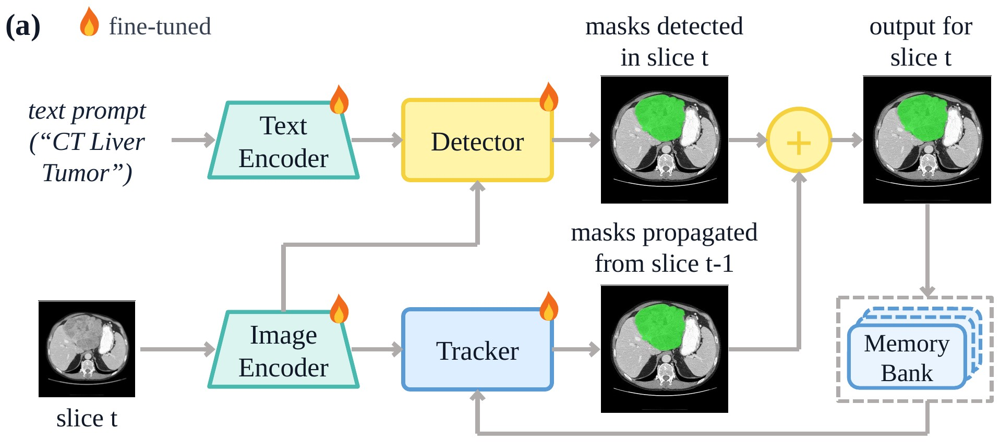
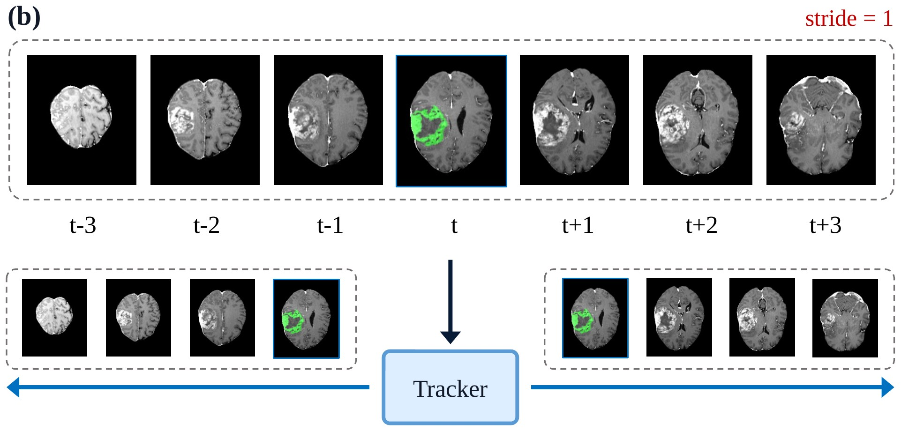
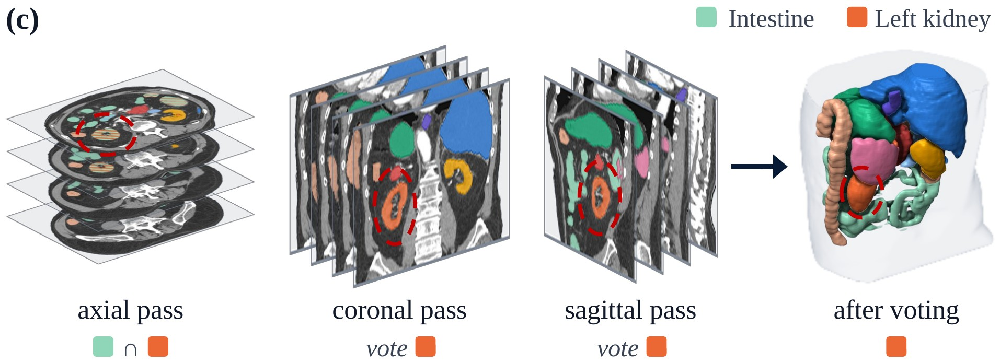
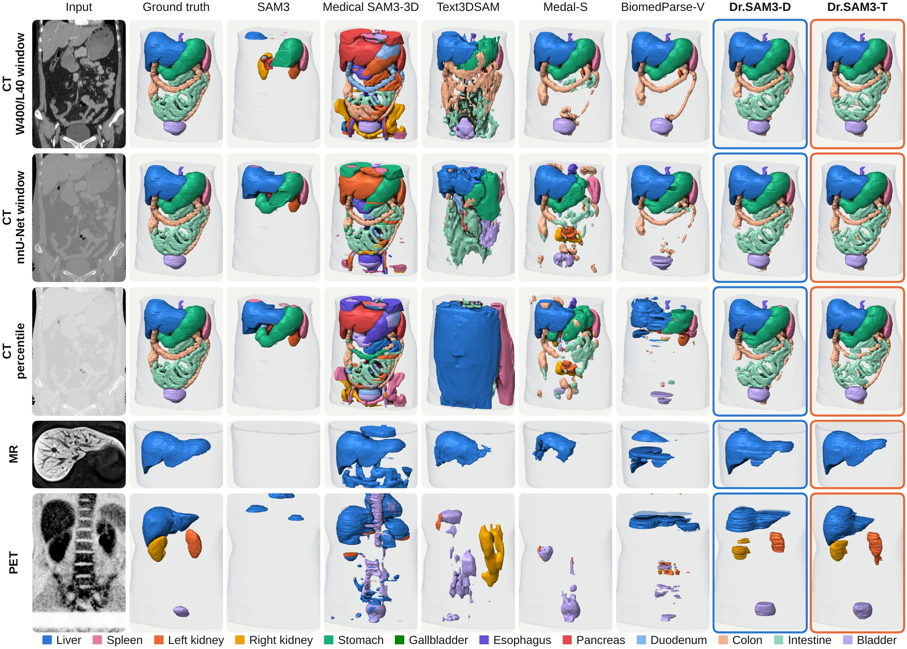
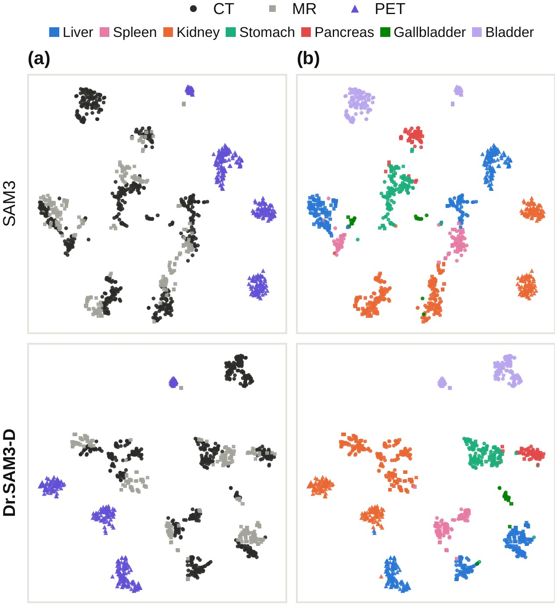

Explore in 3D
Surfaces of the ground truth, the original SAM3 and both Dr. SAM3 modes for the same MedSegFM validation volume, sharing one camera. Drag to rotate, scroll to zoom, click a class to hide it.
Surfaces extracted with marching cubes from the label maps at about 2.5 mm resolution (1.3 mm for ultrasound) and lightly smoothed. SAM3 is prompted and scored as in the slice viewer below; DSC is averaged over the ground-truth classes of the volume.
Explore volumes slice by slice
Validation volumes from MedSegFM, segmented from class-name prompts by the original SAM3 and by Dr. SAM3. Drag the slider, use ← →, or press play.
SAM3 is the released checkpoint without medical training, prompted only for the classes present in each volume; Dr. SAM3 is prompted for every class of the dataset. On CT and MR, Dr. SAM3-T includes cross-view label voting.
Abstract
Text-prompted medical segmentation offers a simple interface: name a target and obtain its mask. However, even strong benchmark accuracy does not guarantee transfer: existing models, including medical adaptations of SAM3, degrade on external datasets or when computed tomography (CT) scans are preprocessed differently. We introduce Dr. SAM3, which adapts SAM3 to medical volumes by changing only its training and inference, not its architecture: training is rebalanced toward under-represented modalities and rare targets, and the model segments each slice independently or adds mask propagation between slices. On MedSegFM, the public five-modality benchmark used for training, the slice-wise model leads the evaluated models using public medical training data, with 77.8 mean semantic Dice and 40.5 mean instance F1. Without further fine-tuning, it attains the highest Dice among all evaluated text-prompted models on external CT and magnetic resonance datasets, and it segments organs in positron emission tomography, where training provides labels only for lesions, far more accurately than every baseline. Its accuracy changes by only 2.1 Dice points across three CT intensity conversions, whereas baselines adapted on the same data lose up to 37.0.
Method
Dr. SAM3 keeps SAM3's architecture, starts from its pretrained weights, and changes only how the model is trained and run. Phase 1 fine-tunes the detector, image encoder and text encoder on medical slices; Phase 2 freezes these pathways and fine-tunes the tracker's propagation modules on clips from volumes. Each class name is a separate prompt.

a Pipeline and detector adaptation
Dr. SAM3-D applies the Phase 1 detector to each axial slice. Dr. SAM3-T runs SAM3's video inference from the center slice toward both ends, combining the detector's masks on each slice with masks that the tracker propagates from the previous slice. Flames mark the modules fine-tuned from SAM3. Phase 1 changes how slices are sampled and prompted:
- Modality-balanced volume caps equalize the slices sampled per modality, cutting CT's share from 81.7% to about 30%.
- Density-triggered patch split runs the detector on quadrants when a slice holds more instances than its 200 queries (microscopy vessels).
- Modality-prefixed prompts such as
CT LiverandMR Liverseparate the look of an organ in each modality. - Volume-level repeat factor sampling draws more slices from the source volumes that contain rare classes.
- Ratio-triggered negative-slice cap limits target-free slices to 20% of a modality (only PET triggers it).

b Tracker adaptation
Neighboring slices show the same anatomy, so Phase 2 trains the tracker on clips built for volumes:
- Adjacent-slice sequencing: eight consecutive axial slices with stride one, instead of SAM3's random temporal strides, so small tumors and lesions are not skipped.
- Center-to-periphery sequencing: each volume is split at its center slice and both halves run outward, as at inference.
- Masked short-clip padding: short clips are kept by repeating the last valid slice and masking the padded entries out of the losses and memory updates.

c Cross-view label voting
Dr. SAM3-T propagates one mask per prompt, so different prompts can claim the same voxels. Only at those voxels, a coronal and a sagittal pass of the same axially trained model each cast one vote, and ties follow the axial confidence. The rule uses no ground truth and no tuned threshold and is applied to CT, MR and PET volumes. It raises the Dice of Dr. SAM3-T on MedSegFM CT from 63.9 to 70.0 and on RAOS-Real from 74.4 to 77.0.
Results
Transfer to external datasets
Checkpoints and prompts fixed, no target-dataset fine-tuning: RAOS-Real (12 abdominal organs in 93 CT cases, all WORD-derived scans excluded, W400/L40 conversion), LiQA (liver in 30 MR volumes) and QUADRA-HC (four organs in 96 PET scans, whose organs MedSegFM never labels in PET). Class-average DSC and NSD (2 mm). QUADRA-HC reference masks are derived automatically from the paired CT, so the PET results are exploratory.
Hatched: BiomedParse-V, which adds pretraining on non-public medical data.
Robustness to CT intensity conversion
The same 93 RAOS-Real cases under three conversions of the raw Hounsfield units to 8-bit input: the W400/L40 window used in training, the clipping range of the RAOS authors' nnU-Net, and a per-volume 0.5–99.5 percentile stretch. Δ is the gap between the highest and lowest DSC.
| Model | W400/L40 | nnU-Net | Percentile | Δ DSC ↓ | |||
|---|---|---|---|---|---|---|---|
| DSC | NSD | DSC | NSD | DSC | NSD | ||

Organ features across modalities
Why does the transfer to PET occur? In the image features of Dr. SAM3-D, PET organs lie near the same organs in CT and MR. Features are averaged within each organ's ground-truth mask, before text conditioning. For 94.6% of the 260 QUADRA-HC PET organ instances, the nearest MedSegFM CT or MR instance is the same organ, versus 78.8% for SAM3 (chance: 23.1%); with external RAOS-Real CT as the reference, 86.5% versus 48.5%.
SAM3 already groups organs to some extent, but it splits organs such as the liver and spleen into distant clusters and segments almost no PET organs (0.4 Dice).

In-distribution: MedSegFM validation set
1,457 semantic and 686 instance volumes, every official per-case prompt, official evaluator. Semantic classes: DSC; instance classes: F1. Mean averages the modalities. Teal marks the best value among models using public medical data; the gray row is the closed-data baseline. † Upstream medical training.
| Model | Training data | Semantic DSC | Instance F1 | |||||||
|---|---|---|---|---|---|---|---|---|---|---|
| CT | MR | US | Mean | CT | MR | PET | Micro | Mean | ||
CT and MR tumors and lesions
Class-average instance F1 over all 11 tumor and lesion classes. Mask propagation suits these small targets.
Adaptation and inference cost
Fine-tuning GPU-hours on MedSegFM (excluding upstream pretraining) and median seconds per semantic volume on one A100. Log scale.
Which mode to use
Dr. SAM3-T has the highest CT and MR instance F1 and is the better choice for CT and MR tumors and lesions. Dr. SAM3-D is stronger on PET and microscopy instances and on semantic classes, and it is the faster of the two.
Qualitative comparisons on MedSegFM
One slice per example, cropped around the target. Each row is a class-name prompt on a MedSegFM validation volume.
BibTeX
@article{youn2026drsam3,
title = {Dr. SAM3: Towards Generalizable Text-Prompted 3D Medical Segmentation},
author = {Youn, Sangwoo and Huang, Xiaoke and Seo, Joonhyuk and Xia, Fei and Cardenas, Alvaro A. and Zhou, Yuyin},
journal = {arXiv preprint},
year = {2026}
}